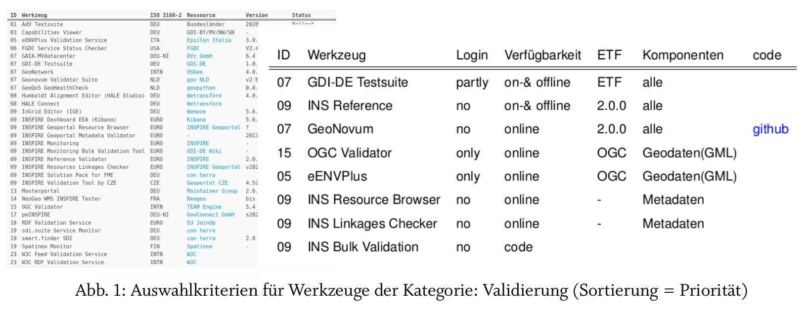
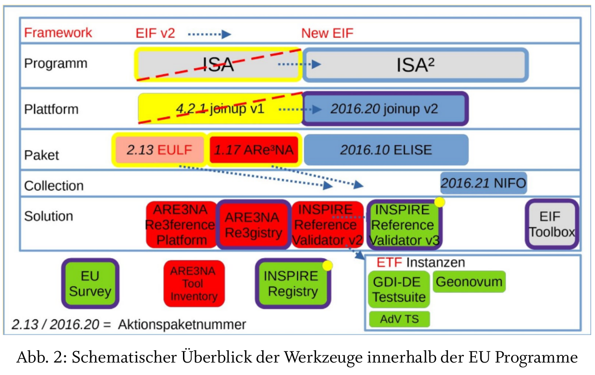

Thema: Qualitätssicherung in Geodateninfrastrukturen - Stand der Technik
Betreuer: Prof. Dr. Pascal Neis
Bearbeitungs-Zeitraum: '20 - '21
Eine Organisation oder der Betreiber einer GDI besitzt eine interne Sicht auf die eigene GDI und kennt die Komplexität und Qualitätsunterschiede innerhalb der eigenen GDI sowie der angebotenen Daten und Dienste. Dagegen hat eine Privatperson sowie ein Mitglied einer anderen Organisation nur eine externe Sicht auf die Komponenten dieser GDI und kann nur anhand bereitgestellter Informationen die Qualität sowie Nutzbarkeit beurteilen. So kann beispielsweise die Konformität zu nationalen und internationalen Standards, die Verfügbarkeit eines Dienstes (Ist der Dienst auch wirklich 24h verfügbar?) oder andere qualitätsbeschreibende Parameter erfasst werden.
Für diese Form der Qualitätssicherungen stehen für Geodaten und Geodatendienste Werkzeuge bereit, die sowohl den Betreiber als auch den Nutzer bei eben dieser Qualitätsprüfung unterstützen. Diese Werkzeuge können als erweiterte Servicefunktionen in die GDI integriert sein, wie es im Falle der GDI-DE Testsuite ist. Diese unterstützt die deutsche Geodateninfrastruktur (GDI-DE) und stellt sicher, dass die einzelnen Beteiligten innerhalb der GDI-DE ihre Daten unter Gewährleistung eines gewissen Qualitätsstandards bereitstellen.
Dabei ist die Testsuite bei weitem nicht das einzige Werkzeug für die Qualitätsprüfung von Geodateninfrastrukturen und es fehlt eine systematische Betrachtung und aktuelle übersicht über genau diese Werkzeuge. Diese Arbeit setzt sich zum Ziel genau diese fehlende übersicht zu erarbeiten und darüber hinaus die verschiedenen Werkzeuge zur Qualitätssicherung zu vergleichen und hinsichtlich Ihrer Eignung für die Qualitätssicherung zu bewerten.
Diese Werkzeuge können Teil der GDI sein oder auch extern zur Verfügung stehen und für die Qualitätssicherung verschiedener Geodateninfrastrukturen oder Dienste genutzt werden. Gerade der erstgenannte Fall unterstreicht, dass für ein Verständnis der Werkzeuge als Voraussetzung ein Verständnis der Architektur einer GDI samt dazugehöriger Komponenten notwendig ist. Häufig lassen sich erst bei der Analyse Kriterien und Indikatoren feststellen, welche notwendig sind, um die Verwendbarkeit der Werkzeuge innerhalb einer GDI zu beurteilen.
Als Ergebnis aus der gesamten Untersuchung, zeigt sich erstmal, dass durch die direkte Veröffentlichung von Werkzeugen in einem Wiki und anderen Plattformen eine bedeutende Rolle bei der Qualitätssicherung spielen. Diese Komponente gibt jedem Interessierten zu Beginn einen Einstieg in die Thematik. Durch die Möglichkeit der Mitarbeit sind auch immer die Initiatoren gefragt, die Inhalte aktuell zu halten und die Nutzer aktiv zu informieren. Aufgrund der hohen Anzahl solcher Plattformen wird es immer notwendiger diese zu verknüpfen.
Die Semantik spielt dabei eine große Rolle, da bei Informationen erstmal egal ist, ob es sich nun um ein Wiki als Ressource oder einen Datendienst handelt. Ohne Publikation und Verteilung der Informationen an die richtige Stelle ist das Wissen weniger wert.
Für eine Bewertung von Werkzeuge innerhalb der Qualitätssicherung können unterschiedliche Sichten angenommen werden. Zunächst kann je nach Rolle innerhalb der angesprochenen Interessengruppen, ein Werkzeug einer Aufgabe zugeordnet werden. Deshalb ist es relevant alle Werkzeuge zumindest zu kennen und einordnen zu können. Zum aktuellen Zeitpunkt kann davon ausgegangen werden, dass keine übersicht von in Verwendung befindlichen Werkzeugen für die Qualitätssicherung bzw. GDI öffentlich existiert.
Durch immerhin sechs übersichten an möglichen Werkzeuge und dem Wissen, dass die nächste Studie zu Werkzeugen schon in Arbeit ist, zeigt sich, dass alle paar Jahre eine neue Liste dazu kommt.
Bei der Suche nach Validatoren für die Bewertung von Qualität wurde in der Untersuchung festgestellt, dass einige Werkzeuge kompletter sind, um beim Aufbau einer GDI zu unterstützen. Dennoch lassen sich dieser Werkzeug von denen zur Qualitätsicherung unterscheiden. Beispielsweise ist die Schemavalidierung in Geonetwork möglich, aber mehr nicht. Mit der Anzahl der verfügbaren Werkzeuge lässt sich überwältigend feststellen , dass es viele Werkzeuge gibt. Innerhalb der ersten Studienphase wurde anhand zweier Validatoren anhand der gleichen Ressource (INSPIRE Validators, GDI-DE Testsuite) getestet. 
Als Methode wurde der Vergleich von Literaturquellen gewählt, um übersichten mit Werkzeugen zu identifizieren und anschließend die Werkzeuge anhand von Kriterien zu untersuchen. Als erstes Ergebnis ist eine eigene übersicht entstanden, welche ca. 20 Werkzeuge enthält (Abb. 1 links). Für die Validierung von Werkzeugen (Abb. 1 rechts) für die Qualitätsmerkmale Konformität und Dienstqualität wurden diese sogenannten Validatoren hinsichtlich ihrer Aktualität und somit Verwendbarkeit hin untersucht und anhand von gleichen Testbeispielen (z.B. WMS-Dienst von Verwaltungsgrenzen Berlins) verglichen. 
Innerhalb der Untersuchung von immerhin sechs übersichten (Zeitraum 2012-2020) ließen sich Werkzeuge identifizieren, die nicht nur für ein Modell einer GDI gelten, sondern auch für die Sicht auf die organisatorische Schicht einer GDI relevant sind.
Betrachtet man die Entwicklung des für Geodateninfrastrukturen gültigen Interoperabilitätsrahmen (EIF) dann lassen sich die konzeptionellen änderungen des EIF beispielsweise auf eine Geodateninfrastruktur übertragen. Wie in Abb. 2 dargestellt befinden sich die Werkzeuge als Lösung innerhalb von Sammlungen, Arbeitspaketen, Plattformen und Programmen. überprüft man nun jede Anforderung von jedem Objekt in dieser Hierarchie, so lassen sich zahlreiche Parameter identifizieren, an denen man Qualität messen kann.
Werkzeuge, wie die GDI-DE Testsuite sind wiederum Instanzen der Lösungen, welche wie in Abb. 2 abgebildet wiederum Basis für eine weiteren Framework (ETF) bedeuten und z.B. die AdV Testsuite quasi ableiten aber auch integrieren könnten. In Bezug auf Geodateninfrastrukturen, räumliche Qualität zu messen, ist solch ein Framework technisch zu untersuchen, ob auch Parameter anderer Objekte (z.B. Effektivität, Offenheit) betrachtet werden. Damit beispielsweise nur ein Werkzeug für eine Aufgabe exisitiert bräuchten Anwender ja nicht drei Werkzeuge, wenn sie die gleiche Funktionalität besitzen. Hier kommt es wiederum auf andere Qualitätsparameter an, wenn es sich z.B. um den Programmcode handelt, der für externe Institutionen veröffentlicht werden könnte. Für die Qualitätssicherung ist es essentiell wichtig, dass bei der Betrachtung von diesen Parametern, die verschiedenen Bedeutungen "Merkmale, Schlüsselwörter, Kriterien oder Identifikatoren" aus den Modellen mit betrachtet werden.